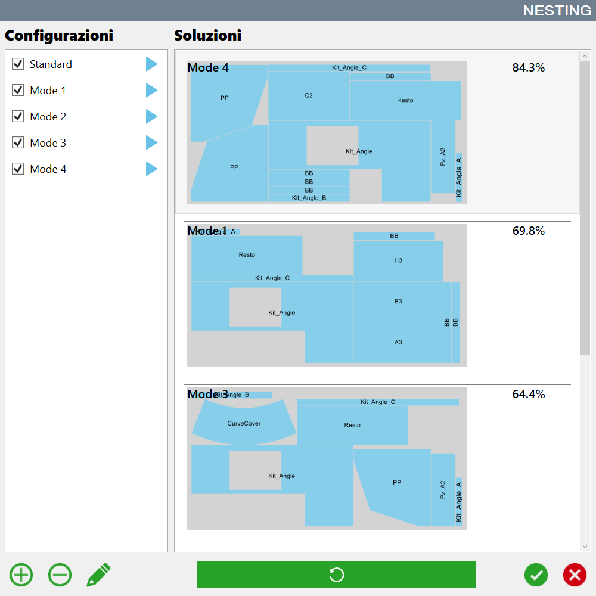

L'utilizzo del Nesting automatico è particolarmente utile quando i pezzi da elaborare sono tanti e le diverse combinazioni non sono più gestibili in modo semplice dall'uomo.
In base ai parametri impostati ci possono essere soluzioni diverse. Le stesse vengono mostrate a monitor e l'operatore può scegliere la configurazione preferita.
/0.00.png)
Pulsanti
/0.04.png) | Aggiungi |
Elimina | |
Modifica | |
Esecuzione |
Modifica configurazione
Il Nesting automatico consente la personalizzazione dei parametri da utilizzare per il calcolo del posizionamento dei pezzi all’interno dell’area di lavoro legato ad una configurazione.
Infatti, in base alla tipologia dei pezzi da elaborare, ci possono essere strategie migliori e più performanti.
/0.11.png)
Nome | Nome della configurazione che appare nell’elenco. |
Distanza lastra | Distanza che i pezzi devono mantenere dal bordo della lastra quando vengono posizionati. |
Num. soluzioni fra cui cercare | Numero di soluzioni calcolate dal Nesting. Tra tutte quelle calcolate viene scelta la migliore. |
Num. prove spostamento | Numero di prove eseguite spostando il pezzo se non entra nel perimetro della lastra. |
Valore spostamento | Valore di cui spostare il pezzo per tentare di inserirlo all’interno del perimetro della lastra. |
Num. tentativi su stessa lastra | Numero di tentativi per poter inserire il pezzo all’interno dello stesso perimetro nel caso in cui non entra. |
Timeout calcolo soluzioni | Tempo massimo che viene concesso per il calcolo di ogni soluzione singolarmente. |
Usa ordine lista | Impone di provare a posizionare i pezzi all’interno del perimetro seguendo l’ordine in cui si trovano nella lista dei pezzi. |
Usa ordine personalizzato | Permette di scegliere l’ordine con cui provare a posizionare i pezzi all’interno del perimetro della lastra in base ad alcune loro proprietà. |
Forza pezzo prima di passare al successivo | Permette di scegliere se provare a posizionare il pezzo in posti diversi all’interno del perimetro della lastra, oppure passare al collocamento del successivo senza ulteriori tentativi. |
Punto di partenza fisso | Permette di scegliere il punto del perimetro da cui iniziare ad inserire i pezzi. |
Fissa modalità righe - colonne | Permette di scegliere se durante l’inserimento dei pezzi si deve mantenere una logica affinchè risultino disposti su righe, su colonne o casualmente. |
Modalità rotazione pezzo | Permette di scegliere la logica con cui è possibile ruotare i pezzi per le prove di inserimento all’interno del perimetro della lastra. |
Usa massimo rettangolo interno | Se abilitato, i pezzi verranno inseriti all’interno del rettangolo di area maggiore contenuto all’interno del perimetro. |
Attiva Deep Nesting | Se disabilitato, i pezzi vengono inseriti sulla lastra in modo da ottimizzare l’utilizzo del sistema di movimentazione del materiale con ventose per la risoluzione delle collisioni. |
Esecuzione Nesting
Premendo la freccia azzurra presente a fianco di ciascuna voce dell’elenco, verrà calcolato il Nesting utilizzando quella configurazione.
Un’anteprima del risultato verrà inserita nella sezione di destra. Viene mostrata la disposizione dei pezzi all’interno del perimetro e la percentuale di area della lastra che viene ricoperta dai pezzi.
/0.08.png)
Se la disposizione dei pezzi non soddisfa, è possibile premere nuovamente la freccia azzurra per ricalcolare il risultato.
Dopo aver eseguito tutte le configurazioni di Nesting, i risultati vengono disposti in modo da mostrare prima quelli che consentono di occupare la maggior superficie della lastra.

Una volta scelta la configurazione che si preferisce, premere il tasto di conferma ed i pezzi verranno posizionati sulla lastra secondo la disposizione scelta. La posizione dei pezzi sull’area di lavoro rimane modificabile dall'operatore.
/0.10.png)